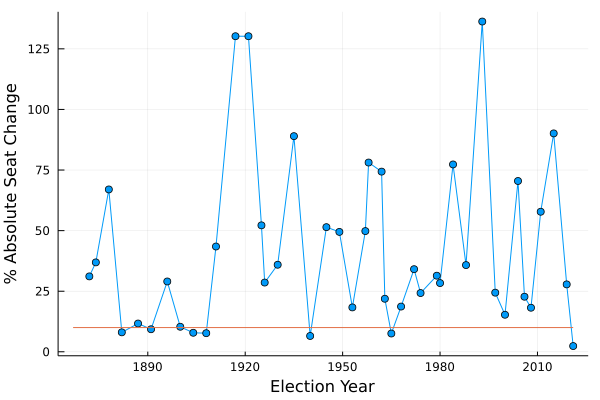

using CSV, DataFrames, Statistics, Pipe, PlotsOn Monday, September 20 2021, Canadians went to the polls and ended up electing a parliament that looked very much like the one we had in August, prior to the election. Very notably so. I’m not much of a political watcher, but I did wonder was this really so notably similar? Or do we just have short memories?
This is easy enough to answer.
Methodology
What I would like to do is take a table with the number of seats each party got in each election and calculate the change in seats from one election to the next, then add that up. I can’t simply add it up though, as the total number of seats (usually) remains constant and any party’s gain is another party’s loss: the total would always be zero. Instead I am going to add up the absolute value of the change, which effectively double counts each seat (it is counted when one party loses it and again when another party gains it). Also the total number of seats in the house of commons has not always been 338, to adjust for this I will take the absolute value of the change in percentage of seats. So, for example, if party A enters an election with 20% of the seats and leaves with 20% of the seats then this counts as no change, though if they entered with 20 seats and left with 20 seats but the overall number of seats had increased, then that counts as a change.
I can calculate this for each election and see how much of an outlier 2021 was.
# takes a dataframe of the form
# | YEAR | party1 | party 2 | ... | party n |
# |------|--------|---------|-----|---------|
# | 1 | 100 | 50 | ... | 0 |
# | : | : | : | : | : |
# | m | 30 | 160 | ... | 1 |
# and returns a length m vector with the relative change for each year
function seat_change(df)
# the first election seat change is undefined
changes = [NaN]
for i in 2:nrow(df)
# starting with the second election
prev = df[i-1, Not(:YEAR)]
prev_total = sum(prev)
curr = df[i, Not(:YEAR)]
curr_total = sum(curr)
Δseats = 0
# for each party, calculate the absolute difference
for j in 1:length(curr)
prev_pct = prev[j]/prev_total
curr_pct = curr[j]/curr_total
Δseats += abs(curr_pct - prev_pct)
end
# add the change to the list
push!(changes, Δseats)
end
return changes
endDataset
I pulled the seat count for each federal election since 1867 from wikipedia as a CSV, with a little bit of finessing in the data entry. We have had a lot of political parties in our short time as a country and many of them either never ended up with any seats or only one or two before disappearing from history – I have elected to lump these in with the independents as “Other”. We have also had several parties that merged or changed, for example the CCF ultimately became the NDP and the Reform party became part of the Canadian Alliance, I have chosen to treat those as the same party.
Running this through the function I defined earlier gives the relative absolute seat change per election.
data_file = "data/federal-electon-results.csv"
results = @pipe data_file |>
CSV.File( _ ; header=1 ) |>
DataFrame(_) |>
hcat(_, seat_change(_)) |>
rename(_, "x1" => "Change")
show(first(results, 6), allcols=true)6×14 DataFrame Row │ YEAR Other Liberal Conservatives CCF/NDP BQ Progressive Anti-Confederate Social Credit United Farmers Reform/Canadian Alliance Liberal Progressive Unionist Coalition Change │ Int64 Int64 Int64 Int64 Int64 Int64 Int64 Int64 Int64 Int64 Int64 Int64 Int64 Float64 ─────┼──────────────────────────────────────────────────────────────────────────────────────────────────────────────────────────────────────────────────────────────────────────────────────────────────── 1 │ 1867 0 62 100 0 0 0 18 0 0 0 0 0 NaN 2 │ 1872 5 95 100 0 0 0 0 0 0 0 0 0 0.311111 3 │ 1874 12 129 65 0 0 0 0 0 0 0 0 0 0.368932 4 │ 1878 9 63 134 0 0 0 0 0 0 0 0 0 0.669903 5 │ 1882 4 73 134 0 0 0 0 0 0 0 0 0 0.0802926 6 │ 1887 11 80 124 0 0 0 0 0 0 0 0 0 0.116654
Results
Plotting the results gives us some interesting years to think about, such as 1917 when the government was composed of the Unionist Coalition, a coalition of mostly Conservatives and some Liberals and others, that basically only existed for the war in what was, apparently, one of the most bitter campaigns in Canadian history. For the next election the coalition dissolved back into it’s original parties, hence an enormous change going in and going out of that parliament. There are other large changes, like the 1993 election in which the Conservatives went into the election with 156 seats and left with 2, nearly being wiped out of parliament entirely – the largest change in history according to this metric.
There have been periods of low change, the red-line on the plot indicates a change of less than 10%, but none as low as 2021. I do find it interesting that in the late 1800s and the early 1900s we had successive governments with very little change in overall composition but after 1908 things are a lot more variable.

We can filter out the low-change elections and get a sense of not just the 2021 election, but the neighbourhood of low-change elections.
lowest = filter(row -> row[:Change] < 0.10, results)
sort!(lowest, [:Change]);7×9 DataFrame Row │ YEAR Liberal Conservatives BQ CCF/NDP Social Credit Liberal Progressive Other Change │ Int64 Int64 Int64 Int64 Int64 Int64 Int64 Int64 Float64 ─────┼───────────────────────────────────────────────────────────────────────────────────────────────────── 1 │ 2021 158 119 34 25 0 0 2 0.0236686 2 │ 1940 179 39 0 8 10 3 6 0.0653061 3 │ 1965 131 97 0 21 14 0 2 0.0754717 4 │ 1908 133 85 0 0 0 0 3 0.0767539 5 │ 1904 137 75 0 0 0 0 2 0.0784959 6 │ 1882 73 134 0 0 0 0 4 0.0802926 7 │ 1891 90 118 0 0 0 0 7 0.0930233
This is an exceptionally low change, the next lowest year (1940) had >2× as many seats change hands. Also, the last time the overall seat change was even close to this low was decades ago, the next previous year with a relative change <10% was 1965 and in that case >3× as many seats changed hands.
This result may change, as of right now several ridings are still too-close to call without mail in ballots, but for some of those if they flip it will actually lower the overall change in seats, not increase it. For example Edmonton Center is currently undecided with the Liberal candidate ahead, but if it flips to the incumbent Conservative the overall relative change for this election would go down.